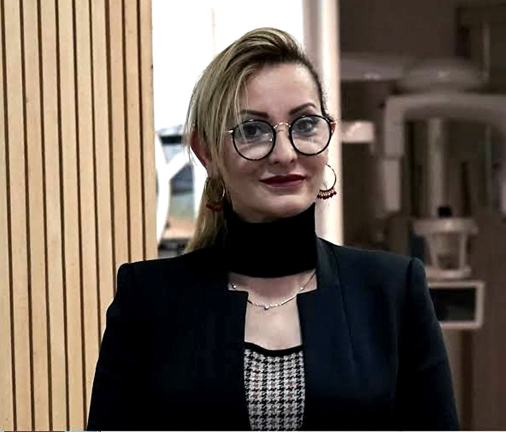
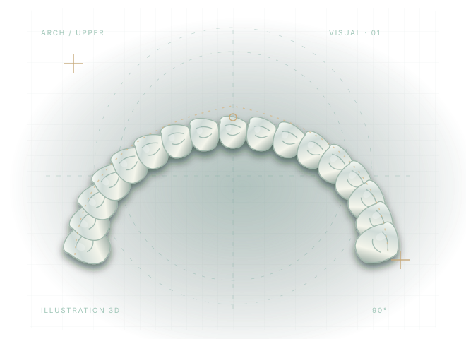
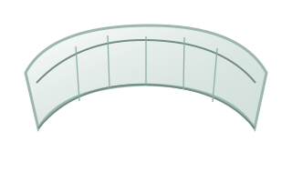
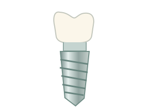
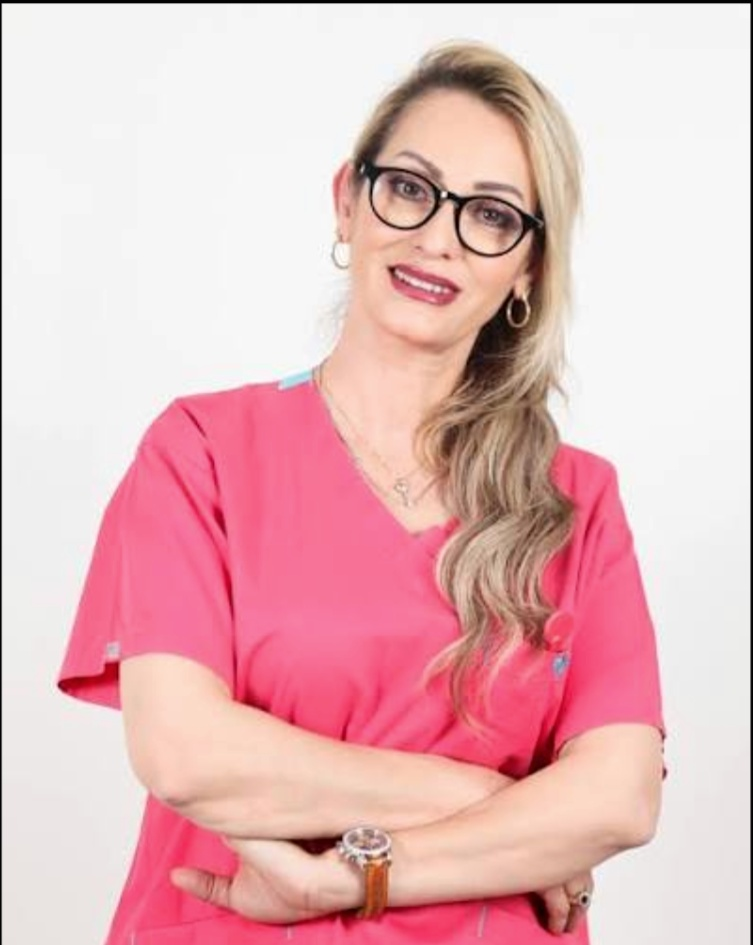

Orthodontie
Étudier l’alignement dentaire et proposer une approche adaptée à l’âge, à l'occlusion et aux besoins individuels.
ENFANTS · ADOLESCENTS · ADULTESUn regard expert sur votre santé bucco-dentaire, des technologies de planification avancées et une attention réelle portée à votre confort.


De la prévention aux traitements esthétiques, des solutions pensées autour d'un diagnostic et de vos besoins.
Explorer toutes les expertisesFacettes, harmonie et préservation du sourire naturel.

Des solutions d’alignement pour enfants et adultes.

Des traitements adaptés à votre situation clinique.
Observer, expliquer et planifier : le numérique accompagne le raisonnement clinique pour vous aider à comprendre les étapes de votre traitement.
Une méthode lisible à chaque étape. Sélectionnez une phase pour explorer le parcours.
Une visite chez le dentiste peut susciter des questions. Nous prenons le temps d’écouter, de présenter le parcours de soin et de créer un cadre rassurant.

Chirurgien-dentiste, avec un parcours de spécialisation en orthodontie en France, le Dr Amina El Omrani associe démarche clinique et attention portée à l’esthétique du sourire.
Découvrir le parcours du Dr AminaUne expérience structurée, du premier échange jusqu'au suivi, qui laisse la place à vos questions.
Une première consultation pour écouter votre demande et comprendre ce qui compte pour vous.
01 — 04Commencez par une consultation au cabinet ou une première demande à distance.
Notre point de départ est toujours le même : un diagnostic précis et un traitement adapté à votre situation.
Prendre rendez-vousÉtudier l’alignement dentaire et proposer une approche adaptée à l’âge, à l'occlusion et aux besoins individuels.
ENFANTS · ADOLESCENTS · ADULTESÉtudier les proportions, la forme, la teinte et l’harmonie du sourire. Un projet esthétique doit respecter les impératifs fonctionnels et biologiques.
FACETTES · SOURIRE · HARMONIEÉvaluer les conditions cliniques nécessaires avant toute restauration et définir les options de traitement appropriées.
EXAMEN · PLANIFICATION · SUIVIPréserver la santé bucco-dentaire à travers les examens, les soins adaptés et les conseils de prévention.
SANTÉ · PRÉVENTION · ENTRETIENChaque décision de traitement repose sur une évaluation clinique. Les options, limites, délais et suites éventuelles sont discutés pendant la consultation.
Parler de mon sourireLes outils numériques aident l'équipe à analyser les situations, préparer les traitements et expliquer les choix possibles.
Échanger avec le cabinetLa technique n'est jamais une fin en soi : elle soutient la compréhension du cas clinique et le dialogue avec le patient.
Une représentation numérique des arcades peut faciliter l'analyse et la préparation de certaines étapes.
Des examens complémentaires peuvent être indiqués selon la situation, les besoins et les règles de justification médicale.
Visualiser et discuter des options esthétiques et fonctionnelles avant de définir un traitement avec le praticien.
Les visuels 3D de cette maquette sont pédagogiques et ne constituent ni un diagnostic ni une simulation de résultat garanti.
CHIRURGIEN-DENTISTE · ORTHODONTIE · SMILE DESIGN
Une formation clinique rigoureuse, une sensibilité esthétique et une conviction : le patient doit comprendre ses soins et se sentir accompagné.
Rencontrer le Dr AminaUne formation initiale en chirurgie dentaire, socle de la pratique clinique.
Un parcours de spécialisation décrit sur le site officiel, notamment à Toulouse et Paris.
Intérêt pour les techniques contemporaines et une approche globale de l'esthétique dentaire.
« La technologie sert la précision. L'écoute donne tout son sens au soin. »
PHILOSOPHIE DE LA MARQUE · TEXTE DE CONCEPTChoisissez la consultation qui vous correspond, puis un créneau. Le cabinet pourra confirmer votre demande après connexion au système de réservation.